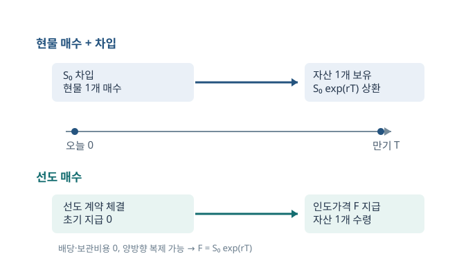

선도가격, 보유비용, 베이시스
가격을 예측하지 않아도 선도가격을 계산할 수 있다. 오늘 현물을 사서 만기까지 보유하는 비용과, 만기에 선도로 같은 자산을 받는 비용이 다르면 동일한 현금흐름의 가격 차이가 생긴다. 이 장은 복리에서 시작해 배당·쿠폰·외화금리·보관비용을 차례로 더한다.
무차익 가격의 질문
미래 주가가 오를지 내릴지와 오늘의 공정 인도가격은 다른 문제다. 투자자가 현물 매수와 선도 매수를 통해 만기에 같은 자산을 받을 수 있다면, 두 경로의 오늘 비용을 맞춰야 한다. 그 결과 얻는 \(F_{0,T}\)는 기대 현물가격 \(E[S_T]\)와 일반적으로 같지 않다. 위험 프리미엄과 투자자의 기댓값은 나중에 별도로 다룬다.
이산복리에서 시작하기
초기금액 \(W_0\)를 연 \(r\)의 명목금리로 \(T\)년간, 1년에 \(m\)번 복리로 운용한다고 하자. 한 번의 이자기간은 \(1/m\)년이고 매 기간 성장배수는 \(1+r/m\)다. 총 \(mT\)번 곱하므로
\(m=1\)이면 연복리, \(m=2\)이면 반기복리다. 같은 명목금리 \(r>0\)라면 이자에 이자가 더 자주 붙을수록 만기금액이 커진다.
복리 빈도를 숫자로 확인하기
\(W_0=1,000\), \(r=10\%\), \(T=5\)년이면 연복리는 \(1,000(1.1)^5\approx1,610.51\)이다. 반기복리는 \(1,000(1.05)^{10}\approx1,628.89\), 월복리는 \(1,000(1+0.1/12)^{60}\approx1,645.31\)이다. 이는 같은 명목 연율을 서로 다른 빈도로 복리한 결과이지, 서로 다른 위험을 비교한 것이 아니다. 현금흐름이 언제 지급되는지에 맞는 금리 관례를 써야 한다.
연속복리와 할인
\(m\)을 무한히 크게 할 때 \(\lim_{m\to\infty}(1+r/m)^{mT}=e^{rT}\)이므로 \(W_T=W_0e^{rT}\)다. 위 숫자는 \(1,000e^{0.5}\approx1,648.72\)가 된다. 확정된 미래금액 \(X_T\)를 오늘 얼마로 바꿀지는 이 식을 뒤집어 \(PV_0(X_T)=X_Te^{-rT}\)로 구한다. 시간 0의 1원과 시간 \(T\)의 1원을 같은 칸에 더하지 않는 것이 모든 선도가격 유도의 출발점이다.
극한을 한 단계씩 보면 성장배수의 로그는 \(mT\ln(1+r/m)\)이다. \(x=r/m\)으로 치환하면 \(m\ln(1+r/m)=r[\ln(1+x)/x]\)이고, \(x\to0\)에서 대괄호가 1에 가까워진다. 따라서 로그 성장량이 \(rT\)로 수렴하고, 다시 지수함수를 취하면 \(e^{rT}\)가 된다. 이는 돈이 매 순간 조금씩 불어나는 경우를 곱셈이 아닌 지수로 표현하는 이유다.
서로 다른 만기 금리를 쓸 때
6개월 현금흐름에는 6개월 무위험 할인율, 1년 현금흐름에는 1년 무위험 할인율을 쓴다. \(r_{0,t}\)를 만기 \(t\)의 연속복리 무위험 금리로 두면 할인인자는 \(e^{-r_{0,t}t}\)다. 모든 만기에 동일한 \(r\)을 쓰는 식은 설명을 위한 단순화다.
$S$, $F$, $K$, $f$를 분리하기
\(S_t\)는 시점 \(t\)의 현물가격, \(F_{t,T}\)는 시점 \(t\)에 새로 약정할 만기 \(T\)의 공정 선도가격이다. \(K\)는 이미 체결한 계약에 적힌 고정 인도가격이며, \(f_t\)는 그 오래된 계약의 현재가치다. 새 계약은 공정 \(K=F_{t,T}\)로 시작해 보통 \(f_t=0\)이다. 시간이 흐른 뒤 \(F_{t,T}\)가 움직여도 기존 \(K\)는 바뀌지 않으므로 \(f_t\)가 0이 아니게 된다.
투자자산과 소비자산
주식·채권처럼 보유자가 주로 투자 수익을 얻기 위해 들고 있고 공매도·대출이 가능한 자산은 현물과 선도의 현금흐름을 비교적 쉽게 복제한다. 석유나 구리처럼 생산에 즉시 투입할 수 있는 자산은 재고 보유의 편익수익률이 있어 부족한 재고를 공매도하기 어려울 수 있다. 둘 다 선도가격에 자금조달·보관비용이 영향을 주지만, 소비자산에는 가격을 한 점으로 고정하기 어려운 제약이 있다.
보유비용 공식의 한 단계씩 유도
배당이 없고 보관비용도 없는 투자자산 한 단위를 오늘 \(S_0\)에 사기 위해 \(S_0\)를 빌린다. 만기에 자산을 선도 매도해 \(F_{0,T}\)를 받고 차입금 \(S_0e^{rT}\)를 갚는다. 아무 위험 없이 남는 금액이 생기면 가격 차익이므로 공정가격은 \(F_{0,T}=S_0e^{rT}\)다. 선도가격이 이보다 높으면 현물 매수·선도 매도, 낮으면 자산 공매도와 선도 매수의 역거래를 고려한다. 역거래 가능성은 공매도와 차입 조건에 달린다.
두 방향을 끝까지 계산해 보자. 시장가격 \(F^{\rm mkt}_{0,T}>S_0e^{rT}\)라면 오늘 현물을 매수해 선도로 매도하고, 만기에 \(F^{\rm mkt}_{0,T}-S_0e^{rT}>0\)을 확정한다. 반대로 \(F^{\rm mkt}_{0,T}<S_0e^{rT}\)라면 현물을 공매도해 받은 \(S_0\)를 운용하고, 선도로 만기에 자산을 \(F^{\rm mkt}_{0,T}\)에 사서 빌린 현물을 돌려준다. 만기에 \(S_0e^{rT}-F^{\rm mkt}_{0,T}>0\)이 남는다. 첫 거래와 둘째 거래가 모두 가능하고 비용이 없다면 시장가격은 두 부등식을 동시에 피하는 한 점 \(S_0e^{rT}\)이어야 한다. 현실의 차입·공매도 비용은 이 점을 가격 범위로 넓힌다.
배당 \(I_i\)를 \(t_i<T\)에 받는다면 현물 보유의 순비용은 \(S_0-\sum_i I_i e^{-r_i t_i}\)다. 미리 알 수 있는 보관비용 \(C_j\)가 있으면 그 현재가치를 더한다. 따라서 공정 선도가격은
여기서 앞 괄호는 오늘 자산을 마련해 만기까지 유지하는 순비용이다. 이산 현금흐름과 비례적 연속 보관비용을 동시에 쓸 때는 각 비용을 중복계산하지 않도록 어느 항목에 포함했는지 명시한다.

기존 선도계약의 현재가치
시점 \(t\)에 남은 기간을 \(\tau=T-t\)라 하자. 기존 매수 계약과 오늘 체결하는 새 매도 계약을 같은 만기로 결합하면 만기에는 자산 인수·인도가 상쇄되어 확정금액 \(F_{t,T}-K\)만 남는다. 그러므로
배당이 없는 주식이라면 \(F_{t,T}=S_te^{r_t\tau}\)를 대입해 \(f_t=S_t-Ke^{-r_t\tau}\)가 된다. 알려진 배당의 현재가치가 \(I_t\)라면 \(f_t=S_t-I_t-Ke^{-r_t\tau}\). 선도가격 \(F_{t,T}\)는 새 약정의 인도가격, \(f_t\)는 기존 약정의 지금 청산 가치라는 구별이 이 식에서 선명해진다.
배당 없는 주식: 과대평가된 선도
90일을 \(T=1/4\)년으로, \(S_0=\$20\), 연속복리 금리 \(r=4\%\)로 둔다. 무차익 선도가격은 \(20e^{0.04/4}\approx\$20.2010\)이다. 시장 선도가격이 \(21\)이면 너무 비싸다. 오늘 \(20\)를 빌려 주식을 사고, 동시에 만기에 그 주식을 \(21\)에 팔기로 약정한다. 오늘 순현금흐름은 0이다.
만기 현금흐름이 왜 확정되는가
만기에 주식의 시장가치는 \(S_T\)지만 선도 매도에 주식을 넘기고 \(21\)을 받으므로 \(S_T\)는 사라진다. 빚 상환액은 \(20e^{0.01}\approx20.2010\)이다. 확정 이익은 \(21-20.2010\approx\$0.7990\)다.
| 거래 | 오늘 | 만기 |
|---|---|---|
| \(20\) 차입 | \(+20\) | \(-20e^{0.01}\) |
| 주식 1주 매수 | \(-20\) | \(+S_T\) |
| 선도 1주 매도 | \(0\) | \(21-S_T\) |
| 합계 | \(0\) | \(21-20e^{0.01}\) |
거래비용이나 공매도·자금조달 제약이 있는 현실에서는 정확히 한 점이 아니라 차익거래가 작동하지 않는 가격 범위가 생길 수 있다.
이표채 선도: 쿠폰 시점에 맞춰 할인하기
현재 채권가격 \(1,200\), 6개월과 1년의 쿠폰이 각각 \(50\), 인도 직후에는 1년 쿠폰을 선도 매수자가 받지 않는 배당락·쿠폰락 기준이라고 하자. 6개월 금리 8%, 1년 금리 10%를 연속복리로 쓰면 선도 매수자가 못 받는 쿠폰의 현재가치는 \(50e^{-0.08/2}+50e^{-0.10}\)이다. 따라서
만기 쿠폰의 귀속이 다르면 마지막 \(50\)의 처리도 달라진다. 인도 시점과 쿠폰 지급 시점의 선후를 계약에서 확인해야 한다.
이표채 차익거래를 현금흐름으로 검산
현물채권을 사기 위해 \(48.04\)를 6개월까지 빌리고 나머지 \(1,151.96\)을 1년까지 빌린다. 6개월에는 첫 쿠폰 \(50\)으로 첫 빚을 갚는다. 1년에는 채권의 두 번째 쿠폰 \(50\)과 선도 매도 인도대금 \(F\)를 받고, 장기 차입금 \(1,151.96e^{0.10}\approx1,273.11\)을 갚는다. 순이익은 \(F+50-1,273.11=F-1,223.11\)이다. 시장가격 \(F=1,230\)이면 약 \(6.89\)의 확정 이익이 생긴다. 이 계산이 앞 슬라이드의 식을 독립적으로 검증한다.
외화는 ‘보유하면 외국 금리를 받는 자산’이다
환율 \(S_0\)를 달러/마르크(DM), 즉 1 DM의 달러 가격으로 표시한다. 달러 금리 \(r_{\$}=5\%\), 마르크 금리 \(r_{DM}=8\%\)라면 마르크를 보유해 외국 금리를 받을 수 있다. 따라서 외국 금리가 배당수익률처럼 달러 기준 선도가격을 낮춘다. 60일을 예시처럼 \(T=1/6\)년으로 놓으면
역사적 통화 DM은 유로 도입 전의 예시다. 오늘의 실제 환율이나 금리를 나타내는 숫자로 읽지 않는다.
커버드 금리평가의 복제 거래
만기에 1 DM을 확보하려면 오늘 \(e^{-r_{DM}T}\) DM을 사서 독일에서 운용한다. 그 비용은 달러로 \(S_0e^{-r_{DM}T}\)이고, 달러 차입으로 조달하면 만기 상환액은 \(S_0e^{(r_{\$}-r_{DM})T}\)다. 다른 방법은 오늘 1 DM 매수 선도를 체결해 만기에 \(F_{0,T}\)달러를 지불하는 것이다. 둘 다 만기에 정확히 1 DM을 주므로 비용이 같아야 한다. BIS의 커버드 금리평가 설명.
현실에서는 달러 조달비용·규제 자본·상대방 위험 때문에 이 단순 등식과 시장가격 사이에 cross-currency basis가 지속될 수 있다. 이는 식이 쓸모없다는 뜻이 아니라, 복제 거래에 필요한 조건이 비용 없이 충족되지 않는다는 신호다.
주가지수의 연속 배당수익률
기초지수가 연속 배당수익률 \(q\)를 지급하고 배당을 재투자할 수 있다고 하자. 만기에 1단위의 지수를 확보하려면 오늘 \(e^{-qT}\)단위를 사면 되고, 그 비용은 \(S_0e^{-qT}\)다. 이를 금리 \(r\)로 조달하면 만기비용은 \(S_0e^{(r-q)T}\). 따라서
배당수익률이 시간에 따라 알려진 함수 \(q(u)\)라면 \(qT\) 대신 \(\int_0^Tq(u)\,du\)를 쓴다. 알려진 개별 배당금에는 슬라이드 11의 이산 배당 현재가치 식이 더 직접적이다. CME 지수선물 공정가치 설명.
소비자산과 편익수익률의 범위
원유를 보관하면 자금조달비용과 창고비용이 들지만, 재고가 있으면 생산 중단을 피하거나 일시적 부족을 이용할 수 있다. 이 재고의 편익을 관측하기 어려운 편익수익률 \(y\)로 나타내면 설명식으로 \(F\approx S_0e^{(r+s-y)T}\)를 쓴다. 그러나 이것은 편익을 모두 확정 현금흐름처럼 복제한 엄밀한 차익거래 등식이 아니다.
현물을 살 수 있고 보관할 수 있다면 선도 과대평가에는 현물 매수·선도 매도로 대응하므로 \(F\leq S_0e^{(r+s)T}\)라는 상한이 생길 수 있다. 반대 방향에는 현물 공매도가 어렵고 재고를 포기할 수 없어 같은 강도의 하한이 없을 수 있다. 투자자산의 등식과 소비자산의 경계 조건을 구분해야 한다.
예를 들어 \(r=5\%\), 비례 보관비용 \(s=2\%\), 설명용 편익수익률 \(y=10\%\)라면 1년물의 직관적 가격은 \(S_0e^{0.05+0.02-0.10}=S_0e^{-0.03}<S_0\)다. 재고를 지금 보유하는 이점이 금융·보관비용보다 크기 때문에 미래 인도 약속의 가격이 현물보다 낮을 수 있다. 그러나 \(y\)는 재고가 주는 관측 불가능한 서비스의 암묵적 가치에 가깝다. 이를 예금이자처럼 확정 수입으로 오해해 방금 숫자를 모든 원자재에 적용해서는 안 된다.
과대·과소평가를 발견했을 때의 거래
시장 선도가격이 복제비용보다 높으면 선도를 매도하고 현물을 사서 보유한다. 낮으면 선도를 매수하고 현물을 공매도한 뒤 공매도 대금을 운용한다. 후자의 거래는 대주 가능 여부, 배당 지급 의무, 재고 보유자의 편익 때문에 어려울 수 있다. 선물은 일일정산이 있어 여기에 증거금의 현금흐름과 차입비용도 더해진다. ‘이론값과 다르다’와 ‘오늘 누구나 확정 이익을 낸다’는 같은 명제가 아니다.
지수선물의 이론값 계산
현물지수 \(S_0=8,300\), 연속복리 금리 \(r=8\%\), 배당수익률 \(q=5\%\), 만기 \(T=0.5\)년이면
시장 선도가격 \(8,494\)는 약 \(68.56\)포인트 높다. 지수 1단위의 현금복제가 가능하고 거래비용이 없다면 과대평가다. 계산의 관건은 금리 8%에서 배당 5%를 빼는 이유다. 지수를 보유하면 배당을 받기 때문에 미래 인도를 위해 오늘 지수를 사는 순비용이 줄어든다.
지수 차익거래의 단위별 현금흐름
오늘 \(e^{-0.05\times0.5}\approx0.97531\)단위의 지수를 사면 배당 재투자로 만기에 1단위가 된다. 비용은 약 \(8,095.07\)이며 이를 차입하면 만기 상환액은 \(8,095.07e^{0.08\times0.5}\approx8,425.44\)다. 선도 매도로 만기에 지수 1단위를 \(8,494\)에 넘기면 약 \(68.56\)의 확정 차액이 남는다. 실제 거래에는 지수 바스켓 구성·배당 예측·거래비용·차입 조건이 포함되어 오차가 생긴다.
서로 다른 두 ‘콘탱고/백워데이션’
첫째, 현물과 선도 비교에서는 \(F_{0,T}>S_0\)를 콘탱고, \(F_{0,T}<S_0\)를 백워데이션이라 부른다. 둘째, 미래 현물 기대값과 비교하는 ‘정상 백워데이션’은 \(F_{0,T}<E^{P}[S_T]\)처럼 실제 확률 \(P\) 아래의 기대와 선도가격을 비교한다. 두 기준은 다르므로 \(F>S_0\)이면서 동시에 \(F<E^{P}[S_T]\)일 수 있다.
이 가이드의 베이시스는 \(b_t=F_{t,T}-S_t\)로 정의한다. 다른 시장에서는 \(S_t-F_{t,T}\)를 베이시스로 부르기도 한다. 부호가 달라진다는 사실을 먼저 적어야 베이시스 확대라는 말을 정확히 해석할 수 있다. \(F=S e^{(r-q)T}\)라면 \(b=S(e^{(r-q)T}-1)\)이고, 만기가 가까워질수록 이상적 조건에서 0으로 수렴한다. CME의 현물·선물 수렴 설명.
만기에 현물 인도가 가능하고 품질·장소·인도 시점이 같다면 \(F_{T,T}>S_T\)일 때 현물을 사서 인도하고, \(F_{T,T}<S_T\)일 때 반대 거래를 하려는 유인이 생긴다. 차익거래가 실행 가능한 이상적인 조건에서는 결국 \(F_{T,T}=S_T\)가 되어 베이시스가 0이다. 현금결제 지수선물은 최종 결제값을 지수에 맞추는 계약 규칙이 이 수렴을 직접 만든다. 만기 수렴은 미래 현물가격을 오늘 정확히 예측한다는 뜻이 아니다. 오늘의 선도가격과 오늘의 현물가격 사이 간격이 만기가 가까워질수록 사라진다는 뜻이다.
KOSPI200 그래프에서 읽을 수 있는 것과 없는 것
현물지수와 선물가격의 차이는 만기, 금리, 예상 배당, 거래 수급, 제약에 따라 움직인다. 역사적 그래프에서 베이시스가 음수였다는 사실만으로 시장이 앞으로 떨어질 것이라고 결론 낼 수 없다. 현물과 선물의 표시 시점이 같은지, 같은 만기의 선물을 연결한 자료인지, 배당락일과 만기 교체가 반영됐는지를 확인해야 한다. 선물이 현물보다 먼저 움직이는 경우가 있어도 선물이 현물을 항상 일방적으로 결정한다는 뜻은 아니다.
선물과 선도가격은 언제 달라지는가
선물은 유리한 가격변화의 이익을 매일 현금으로 받고 불리한 손실을 매일 낸다. 선도는 보통 만기까지 한 번에 정산한다. 금리가 확정적이면 중간 정산액의 재투자·조달 조건이 예측 가능해 두 가격이 가까워진다. 금리가 확률적으로 변하고 선물가격 변화와 양의 상관관계가 있으면 이익이 나올 때 금리도 높아 재투자에 유리해 선물가격이 선도가격보다 높아질 수 있다. 반대 상관관계면 방향이 뒤집힐 수 있다. 이것은 특정 모형·담보·재투자 가정 아래의 경향이지 모든 시장에서 부호를 보장하는 법칙은 아니다.
왜 중간 현금흐름이 가격에 영향을 주나
만기 손익이 같더라도 A계약은 오늘 1원을 받고 B계약은 만기 1원을 받는다면 두 계약의 현재가치는 다르다. 선물의 일일정산액은 그날 이후의 금리로 운용하거나 조달해야 한다. 이 미래 금리가 선물 손익과 함께 변하면 ‘손익의 합계’와 ‘그 손익을 운용한 만기 재산’이 달라진다.
복제 가능성이 결론을 결정한다
투자자산은 동일한 미래 현금흐름을 현물 보유와 차입·대여로 만들 수 있어 무차익 등식이 강하게 작동한다. 소비자산에는 재고 편익·공매도 제약으로 한쪽 차익거래만 가능해 상한이나 가격 구간을 얻는 경우가 많다. 현물-선물 베이시스의 부호와 선도-미래현물 기대값의 비교를 섞지 않으면 가격이 왜 그렇게 형성되는지 명확해진다.
다음 장의 질문: 적정가격으로 위험을 얼마나 줄일까
공정가격 \(F_{0,T}\)를 알게 되면 기존 현금흐름에 \(Q(S_T-F_{0,T})\)를 더할 수 있다. \(Q\)의 부호와 크기를 조절해 위험을 완전히 없애거나 일부만 남긴다. 이후에는 평균 현금흐름만이 아니라 하위 5%의 현금흐름을 계산하고, 비선형 사업수익에서는 왜 선형 선도가 완전한 보험이 되지 못하는지 본다.